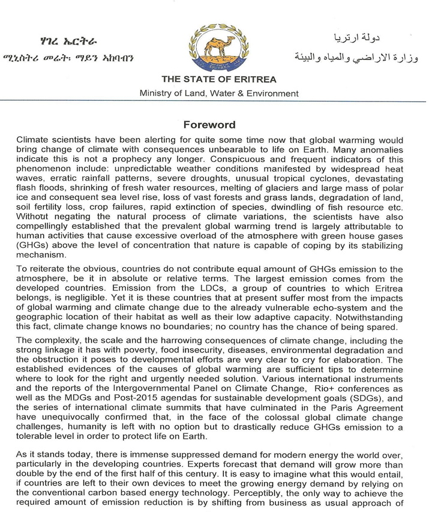
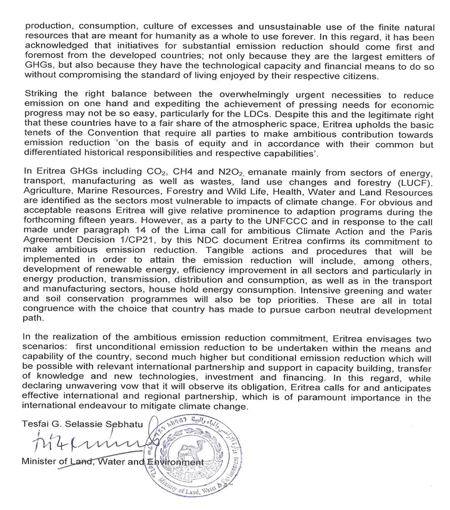
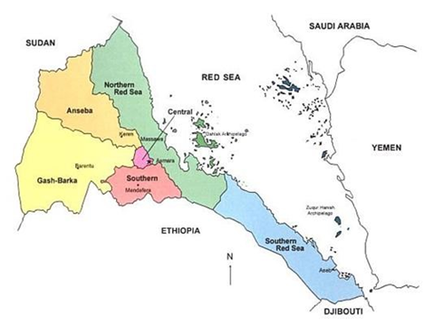
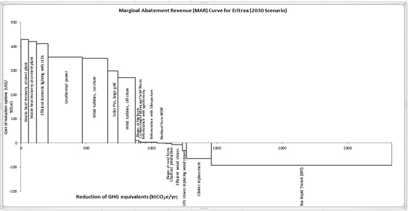
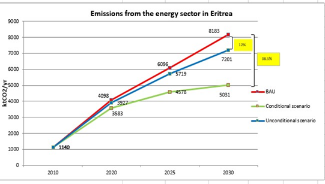
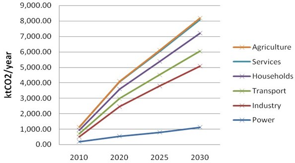

March, 2018
Asmara, Eritrea


Eritrea ratified the United Nations Framework Convention on Climate Change (UNFCCC) in 1995. In response to the Warsaw proposal followed by the Lima call for climate action, Eritrea prepared its Intended Nationally Determined Contribution (INDC) for the period 2020-2030 with the view that global determination to tackle the effects of climate change calls for commitment from all parties with regard to mitigation, adaptation and implementation. Reaffirming its commitment to mitigate and adapt climate change, Eritrea reviewed its INDC to once again revise the items indicated therein. While drafting the Nationally Determined Contribution (NDC), Eritrea consulted the various key stakeholders to see to it if there have been changes since the INDC preparations. This procedure permitted to reassess the climate related database; and revisit the relevant sector and government policies, plans and activities.
In the mitigation, the major greenhouse gases covered are CO2, CH4 and N2O. Key sectors that contribute to the greenhouse gases (GHG) emission are: Energy, Transport, Industry, Waste, land use changes and forestry (LUCF) and Agriculture. Vulnerable sectors to impacts of climate change that need implementation of adaptation measures include Agriculture, Marine resources, Health, Water and Land resources.
In 2010, the total greenhouse gases emission estimated using the Greenhouse gas Abatement Cost Model (GACMO) was ktCO2 1,140, in which, the business as usual scenario of GHGs emission for the year 2030 is expected to rise to ktCO2 8,183.22. Focusing on the energy sector the country assumes two scenarios, in the mitigation of the greenhouse gases emission plans, for the next 15 years. These are (i) reducing by 12.6% unconditionally and (ii) reducing by 38.5 % in the conditional scenario assuming external assistance compared to the business as usual scenarios.
The NDCs presents tangible actions and procedures that are required to be taken to put into practice the projects and programs. These comprise, capacity building, technology transfer, financial support and building of partnership with regional and international organization/institutions involved in climate change. It is stipulated that for effective implementation of the NDC program, monitoring and evaluation (M & E) tools are important. This includes regular monitoring of the stipulated activities indicated in the project documents to check whether they are on the right track or not towards the targets.
Eritrea is committed to embark on carbon - neutral sustainable development pathway during the forthcoming fifteen years. To that end, in December 2015, the country submitted its Intended Nationally Determined Contribution (INDC) to the conference of the parties in Paris. As a follow up to that intuitive, this document thoroughly reviewed the INDC in view of Eritrea‟s National Determined contribution to mitigate and adapt climate change. By and large, it reflects the Eritrea‟s sustained commitments to implement the proposed mitigation and adaptation programs and projects. Furthermore, it has been developed putting into consideration the strategic programs of the key relevant stakeholders which have direct bearing on mitigation and adaptation to climate change. It particularly focused on those sectors that have direct contribution in the reduction of greenhouse gases emissions; and sinks such as forestry, and renewable energies.
To facilitate the implementation of the planned activities, it sought inputs from various sectors of the economy, and streamlined the planned efforts to address climate change induced problems to the national and sector development policies, strategies and plans. It did not only consult the relevant sectors but also reviewed their respective plans in relation to mitigation and adaptation to climate change effects by including the financial requirements needed to implements relevant programs.
The NDC provides a breakdown down action plans for the upcoming 13 to 15 years (20182030), indicated in the INDC by setting three target phases (years) (2020, 2025 and 2030).
The NDCs also presents concrete measures and steps that need to be taken in the implementation the projects and programs. These include, capacity building, technology transfer, financial support and partnership with regional and international agencies involved in climate change.
To ensure effective implementation of the NDC program, monitoring and evaluation (M & E) tools are proposed. This includes periodic monitoring of the activities stipulated in the project documents so as to verify the right direction towards the intended outcome in mitigation and adaption programs.
Eritrea is situated in the north-eastern part of Africa between latitudes, 12°40' and 18°02' and longitudes 36°30' and 43°23'. It borders with Sudan in the north and west, Ethiopia in the south, Djibouti in the southeast and the Red Sea in the east and northeast The land surface area of the country is 125,700 km2 (DoE, NAPA 2007). Administratively, the country is divided into six zobas (regions). These are Anseba, Debub, Debubawi Keih Bahri, Gash - Barka, Maekel, and Semenawi Keih Bahri as shown in Figure 1.
 Figure 1: Regional Administrative regions of Eritrea
No population census has ever been carried out in Eritrea. However, based on the population count by the Ministry of Local Government; and the National Statistics Office of the Ministry of National Development (NSO, 2013), the resident population, as of the base year (2010), was estimated to be 3.2 million. The majority of this population (65%) reside in rural areas where agricultural activities including farming and livestock herding are the sources of livelihoods from. According to NSO (2013), the urban population is rapidly increasing primarily as the result of rural – urban migrations.
The population of Eritrea is unevenly distributed in the country. Consequently nearly 50-60% of the population live in the highlands, an area accounting for not more than 10% of the total country‟s surface area. Because of this there is tremendous pressure on land resources in this area. The annual growth rate of the population is about 2.91 percent.
Eritrea is a country that enjoys ethnic diversity. It is a multi-ethnic society comprising of nine ethnic groups speaking nine distinct languages.
The geology of Eritrea is variable due to continuous uplifting and faulting. Geologically Eritrea is divided into two distinct regions: the central and northern highlands, and the coastal areas. The central and northern highlands consist of the Pre-Cambrian Basement complex of the oldest formations found in Africa. The western highlands with their typical flat-topped mountains are mostly covered by tertiary basaltic flows. Topographically Eritrea is divided into three regions namely the eastern coastal zone, the highlands, and the western lowlands. The highlands stretch from south to north dividing the country into the eastern and western lowlands. In the south, the highland is predominantly a plateau while in the north dissected hills, mountains, and escarpments dominate. The western and eastern lowlands are predominantly flat areas with dome-shaped hills.
According to an updated version of soil classification (FAO 1997), nine major soil types distributed over six agro ecological zones are identified. These are: Cambisols (throughout the country), Lithosols (throughout the country), Fluvisols (moist and arid lowlands, sub-humid, and semi desert), Regosols (moist and arid highlands, moist lowlands and semi-desert), Xerosols (arid highlands and lowlands, semi desert), Vertisols (Moist highlands and lowlands), Andisols (sem-desert), Luvisols (moist highlands) and Solonchaks (semi desert)
Out of the 20 major regional centres of endemism of the vegetation 4 are well represented in Eritrea. These are the Sudanian, Somali-Masai, Afromontane, and Sahel region. The Sahara regional transitional zone is limited to isolated area along the Red Sea coast of Eritrea. Within these four centres of endemism, nine vegetation types are identified. These are (i) Undifferentiated montane vegetation, (ii) Undifferentiated woodland (iii) East African evergreen and semi-evergreen bush land and ticket, (iv) Somalia-Masai deciduous bush land and ticket (v) Somalia-Masai semi-desert grassland and bush land (vi) Sahel Acacia wooded grassland and deciduous bush land (vii) Semi-desert grassland and bush land (viii) Red Sea coastal desert and (ix) Wadis and open desert (Ogbazghi, 2001; White 1983).
The forest cover that occupied about 30% of the total land area of Eritrea, a century ago is now less than 1%. The main reasons for its decline are land clearing for agriculture, overgrazing, wood for fuel, construction of traditional houses, drought and war. Rainfall records in Asmara (e.g. 1903 1932) show that out of the 30 years only in 13 years the rainfall exceeded the mean annual rainfall of 518 mm and in the remaining 17 years, it was much less. Later rainfall records (e.g. 1933 - 1962) of the same area and other meteorological stations in the country show a similar pattern. As the result of recurrent droughts, many humid species disappeared, the evergreen forest shrunk and other thorny types of species emerged.
The climate of Eritrea ranges from hot and arid adjacent to the Red Sea to temperate type in the highlands and sub-humid in isolated micro-catchment area in the sub-humid on the eastern escarpment. Most parts of the country (70%) is hot to very hot with mean annual temperature of more than 27°C; about (25%) as warm to mild with a mean temperature of about 22 °C, and the remaining parts (5%) as cool with a mean annual temperature of less than 19 °C.
The total annual rainfall increases from the north to south; and it varies from less than 200 mm in the northwest lowlands to more than 700 mm in the south-western lowlands. Whilst the coastal lowlands are very dry, some areas on the eastern escarpment get about 1000 mm. Looking at areas covered by the different rainfall regimes, about 50% of the country receives less than 300 mm, 40% between 300 and 600 mm and about 10% more than 600 mm of rain per annum. Hence, Eritrea is mostly arid climate with about 70% of its land area classified as hot and arid and receiving average annual rainfall of less than 350 mm.
Although this is the general picture of the past, there is increasingly climatic variability during the past three decade. The main feature of rainfall patterns in Eritrea is the extreme variability within and between years, and spatial variation over very short distances. While the southwest monsoon winds bring the main (big) and small summer rains in Eritrea; the northern and northeastern continental air streams are responsible for the winter rains along the coast and the eastern escarpment of the central highlands. Naturally, the northern and north-eastern winds are dry but pick up limited amount of moisture while crossing the Red Sea water body. In view of these variations, the country is divided into six major agro ecological zones namely moist lowland, moist highland, arid lowland, arid highland, semi-desert and sub-humid.
Eritrea is currently confronted with major infrastructural challenges. Since the end of the war for independence with Ethiopia (1961 - 1991), and later the border war (1998-2000) significant stride have been made in the development of critical infrastructure. Although the extent and the quality of infrastructure are still inadequate, Eritrea has made important progress in rehabilitating and expanding its basic infrastructure. Power generation still remains critical to investment opportunities. In the past, with the commissioning of the Hirgigo power generating capacity has been boosted from 35 MW in 1991 to more than 135 MW in 2003. To date the total generation capacity is raised to 191MW. Penetration of renewable energy in the electricity generation mix is also growing fast and is estimated about 7.3% of the total electivity generation mix
In view of its rugged topography particularly in the highlands, there is a dire need to rehabilitate the major highways and feeder roads between the eastern and western lowlands. The rail transport which runs from the port city of Massawa, in the coast to Agordat, in the western lowlands has been destroyed during the war and most of its bridges and rails have been damaged. Being a major economic infrastructure with significant contribution in the mitigation of greenhouse gases, the rails requires major renovation to move in tandem with modern railway transport system
Eritrea‟s road transport covers a total of about 16,000 km (both asphalted and dry weather roads) out of which about 10% is asphalted road. These networks require major rehabilitation and expansion to connect the remaining parts of the country. Indeed, the Government has made considerable progress to rehabilitate old roads and to construct new ones, particularly linking the productive regions to major consumption centres. The road network and vehicle importation are expected to increase by 6% and 8% respectively in the next five years.
Road upgrading/maintenance improves the overall vehicle operating cost (mainly fuel consumption) by 5%. Further, it is planned to introduce and develop rapid mass transport system for long routes. This will not only have significant contribution to the economic growth and in the reduction of GHG emissions but also in terms alternative usage of energy sources and their efficiency.
Eritrea has a steadily improving education, health facilities, telecommunication and postal services. Schools are built throughout the country but require energy inputs to introduce information technology. Most of the health centres are supplied with standalone diesel generators to meet their energy demands. The introduction of renewable sources of energy will not only have reliable source of energy but also alleviate the emission of greenhouse gases to the atmosphere.
The liberation war that lasted for three decades (1961-1991) destroyed Eritrea‟s major infrastructure. This had tremendous effects on the environment at large and the economy in particular. From the onset, the Government of Eritrea embarked on an aggressive reconstruction and rehabilitation of its war torn social, economic and physical infrastructures. However, this was disturbed by the (1998 – 2000) border dispute war with Ethiopia which had detrimental effects on economy of Eritrea at large and the areas surrounding the borders with Ethiopia in particular. Consequently, the social, physical infrastructures were destroyed or damaged and required major reconstruction investments to bring it back to the pre 1998 condition. The Government‟s development endeavours were not only limited to rebuilding and rehabilitation efforts of war torn infrastructure but also on formulating a number of environmental, social and economic, development strategies and polices.
For instance, the Macro-Policy Document (GOE, 1994) outlines the background for Eritrea's national economic growth strategy and pursues the guiding principles of human-centred, efficient, sustainable and equitable development. In recognition to the importance of environment in national development, it empathizes on minimizing the potential environmental consequences of development decisions.
Agriculture including farming and pastoralism are the main sources of livelihoods for more than 80% of the labour force. The agricultural sector mainly depends on rainfed production with less than 10% of the available arable land put under irrigation (MoA, 2002). Farming ranges from nomadic systems to small-scale irrigated horticultural production. Consequently, agriculture is mainly characterised by low input and low output. Three major agricultural systems: nomadic, semi-nomadic and sedentary agriculture are practised. Since crop cultivation fully depends on animal traction, the rural population is predominantly agro-pastoral mixing crops with livestock. On the other hand, agricultural production is affected by a large number of factors jointly with high rainfall variability, recurrent drought periods, continuous degradation of the soil, frequent pest outbreaks and lack of an effective research and extension services. For that reason, the agricultural sector accounts only for about 26% of the GDP (MoA)
A number of coastal areas‟ communities depend on fisheries as employment or source of supplementary subsistence to their livelihoods. More importantly, the Red Sea provides ample opportunities for the development of the Fishery industry (MoMR, 2007). The sea also provides wide range of opportunities to extract salts as human food and animal feed as well as raw material for various manufacturing industries. The pristine marines, island and coastal ecosystems are sources of inspiration for the tourist industry as well as scientific expeditions. The prospects for offshore oil and gas extraction are also there.
Eritrea has abundant natural resources including land, biodiversity and minerals. About 26% of the total area is cultivable for agricultural production (MoA, 1994). With the introduction and implementation of sustainable land management practices, it is possible to enhance agricultural productivity and hence ensure food security. Even though, the country is not endowed with perennial rivers, it is possible to harness the water resources from the seasonal rivers as well as underground water resources for agricultural and industrial purposes. Eritrea has also varied and extensive mineral resources including gold, copper, potash, silver, marble, oil and natural gas. The potentials of gold, petroleum and gas are believed to be high (MoLWE, 1997).
The manufacturing industrial sector needs major intervention to revive and develop in tandem with regional and international standards. What once used to be among the most prominent industrial sector of Africa now needs major revival. As stated in the previous sections, the manufacturing sector is fledgling to get out not only of the ravages of war but also to modernise its outdated technologies. Despite these limitations, the country has raw materials for various manufacturing industries. In the short term, agro-industries are expected to take the lead to add values to crop and livestock products.
In view of the aforementioned accounts; Eritrea is a developing country. Agriculture, Mining, Services, Fisheries, Manufacturing Industries, and Tourism inter alia, are expected to play important roles in the economic development of the country. The formidable challenges ahead are how to achieve sustainable development by striking the balance between economic growth, social welfare and environmental protection. In this regards, Eritrea‟s long-term development objective is to attain rapid and widely shared economic growth with macroeconomic stability, steady and sustainable poverty eradication. The aim is to promote equitable economic growth and development including developing exports, increasing agricultural productivity, attracting investment in fisheries, tourism, construction, manufacturing, developing strong financial sector. To do that the government plans to expand and modernize the country‟s basic infrastructure throughout the country.
Eritrea has sound institutional set- up including administrative, legal, commercial, judiciary and regulatory institutions. Although considerable progress has been made, in this respect a lot remains to be done to accomplish the desired level of outcome that can help facilitate the integration of climate change mitigation and adaptation concerns into national development policy framework. As Shown in Table 1 Eritrea has already developed various macro and micro polices and legal instruments, plans, guidelines and communication documents which have important contribution to the adaptation and mitigation of climate change. Eritrea has prepared its NDC based on these national documents.
Table 1 list of national policies, strategies and legal frame works
| National Policy Documents | Year |
|---|---|
| The Five Year Indicative Development Plan (FYIDP), GOE | 2009 |
| Ten Year Long-Term Indicative Perspective Development Plan (TYIPDP), GOE | 2009 |
| Interim-Poverty Reduction Strategy Paper (I-PRSP), GOE | 2003 |
| National Economic Policy Framework and Program (NEPFP), GOE | 1998-2000 |
| National Constitution, GOE | 1997 |
| Macro Policy, GOE | 1994 |
| Cross-cutting | |
| Eritrean Environmental, Protection Management, and Rehabilitation Framework 179/20017 | 2017 |
| Environmental Protection and Management Regulations, Legal Notice 127/20017 | 2017 |
| National Environmental Management Plan | 1995 |
| Water Law, Proclamation No. 162, | 2010 |
| National Health Policy | 2010 |
| Integrated Water Resource Management Action Plan | 2009 |
| Land Use Policy | 2007 |
| Water Policy | 2007 |
| Rural Sanitation Policy | 2007 |
| Fishery Proclamation 195/2007 | 2007 |
| Agriculture Sector Policy | 2006 |
| Forest and Wildlife Policy | 2005 |
| National Environmental Assessment Procedures & Guidelines | 1999 |
| Environmental Health Policy | 1998 |
| Fisheries Product Proclamation | 1998 |
| National Agricultural Development Strategy and Policy | 1994/2005 |
| Biodiversity | |
| National Biodiversity Strategy and Action Plan (NBSAP) | 1996, 2000, 2014 |
| Proclamation on Conservation of Biodiversity | 1998 |
| Forest and Wildlife Conservation and Development Proclamation No. 155/2006 | 2006 |
| Climate Change and Energy | |
| Second National Communication (SNC) | 2012 |
| National Adaptation Program of Action | 2007 |
| Renewable Energy Sub-Sector Policy | 1997 |
| Land Degradation | |
| Five Year Action Plan for The Great Green Wall Initiative (Draft) | 2011-2015 |
| National Action Program | 2002 |
| Land Use Planning Regulatory Framework | 1999 |
| Land Proclamation No.58 | 1994 |
The National Environmental Management Plan (NEMP) for Eritrea (DOE, 1995) also provides the basic policy document for action in the environmental sector and lays out a strategy for action for conservation activities. The plan comprises four parts: environmental and developmental prospects for Eritrea, the major environmental and development issues confronting Eritrea, the major steps and responses involved in an integrated environmental and development planning process, requirements for implementation of the plan and its associated project activities, institutional prerequisites, and financial and human resources.
The GOE has developed an Interim Poverty Reduction Strategy Paper (I-PRSP) (GOE, 2003) which lays out a macroeconomic framework and steps to create the conditions for resuming rapid economic growth, and policies and programs for poverty reduction. Among others, it recognizes the negative impact of forest destruction. In order to prevent further deforestation, it identifies improved forest and wildlife legal and policy frameworks, enhancing conservation measures, undertaking a forest resources inventory, accelerating participatory afforestation programs.
In February 2009, as a follow up to the I-PRSP, the Ministry of National Development of the GOE also prepared the National Development Planning Framework. Refereeing to environmental policy, it stipulated that environmental issues should be mainstreamed in all development policies, plans, programs and projects and ensure adherence to strict environmental standards protecting, restoring and enhancing the country„s environment (land, water and air). The Five Year Indicative Development Plan (FYIDP) (2009-2013), which was prepared immediately after the Planning Framework, emphasised on environmental issues and management. It states that “economic development, should be environmentally sustainable, and that economic growth and development must be achieved without damaging the overall ecosystem on which posterity depends”.
During the five year period (2009-2013) of the FYIDP, it is stipulated that concerted national efforts shall be made to protect, restore and enhance Eritrea„s environmental, natural and cultural assets in all sectors. These include the following major strategic objective and activities:
Towards achieving Eritrea„s environmental management goals, the FYIDP stipulates the following measures to be undertaken during the plan period and beyond: (i) comprehensive national baseline data on the environment shall be prepared; (ii) legal provisions reviewed to determine their adequacy and supplemented if needed; (iii) land use classification and land use maps developed to promote sound land use management; (iv) alternative renewable energy sources, such as wind and solar, shall be harnessed and developed; (v) non-wood construction materials developed to prevent further depletion of forest resources; (vi) establishment of appropriate vehicle emission standards, inspection procedures, and enforcement capacities; and (vii) environmental protection, restoration and enhancement measures shall be mainstreamed in all investments and development programs by requiring appropriate environmental impact assessments, provision of mitigation measures and effective enforcement mechanisms for compliance with established national standard
Traditional subsistence agriculture dominates the Eritrean economy with majority of the population depend on. This production system exerts great pressure on fragile ecosystems. Deforestation, over cultivation, and soil erosion have their toll on the ecological imbalance. Land degradation weakens not only the resilience of the population to cope up with natural and human induced hazards but also makes the rehabilitation efforts difficult.
The above mentioned problems are symptoms of much more deep seated challenges. Due to limited alternative sources of energy, people will continue to cut down trees to satisfy their daily household demand. In the face of recurrent droughts and grazing pressure the regenerative capacity of the vegetation at large and the forests in particular is low. Unless the driving forces behind these problems are uprooted; the problem is likely to persist and the population would not be able to get out of the vicious cycle of poverty. For this reason, the introduction of renewable energy sources is in the right direction towards achieving sustainable development in the foreseeable future.
In addition to the above, small-scale farmers dominate the agricultural sector where farmers earn low agricultural productivity. Characteristically, such farmers live in conditions of persistent poverty and rely on rain-fed and traditional practices. Consequently, such communities are extremely vulnerable to climate change variability. Improved agricultural practices such as climate-smart agriculture, sustainable land management should be introduced and practised to increase land productivity. With such intervention, the current production level of 0.7 tons per hectare could easily be boosted. If these deficiencies are rectified, living conditions of rural households could surpass the poverty threshold USD 2 per day/capita.
As the pressure on forests primarily for household fuel and other domestic uses threatens biological diversity, lasting solutions must be found. The development land used management; intensification of livestock production would also partially alleviate the pressure on land degradation. By and at large; the focus should be on poverty and illiteracy eradication.
Eritrea will undertake climate change mitigation and adaptation initiatives to reduce climate change impacts on its population, environment and economy. Climate Resilient Sustainable Economic Development Policy (CRSEDP) for addressing climate change impacts through both adaptation and mitigation are the goals. CRSEDP would ensure a resilient economic development pathway in the long run. In this regards, Eritrea envisages achieving its goals of becoming climate change responsive country with equitable economic growth by ensuring a rapid to transition of carbon free economy.
To this end, Eritrea is working to raise the share of electricity generation from renewable energy qualitatively and quantitatively and improve efficiency in the demand and supply sectors in its medium plans. Qualitatively it will diversify the electricity generation from various sources including wind, solar and geothermal energy sources. Quantitatively, it will also significantly increase from the current fossil fuel based energy generation to 70% penetration to the total electricity generation mixes using renewable sources. Furthermore it intends to reduce transmission and distribution losses at least by 50%. On the other hand, to enhance energy conservation, it will introduce rapid bus transit system (rail transportation) to cover about 2000 km for mass transportation of passenger and freight; as well as the uses of big buses for passenger transport to a long distance.
| Base year | Target Year | Gases covered |
|---|---|---|
| 2010 | 2030 | Carbon dioxide, CO2, Methane (CH4), and Nitrous Oxide (N2O) |
The NDC covers the entire country covering the six administrative regions of Eritrea. Most sectors that have direct bearing on the greenhouse Gases (GHG) reduction are included in the estimates. On the whole, climate change mitigation actions focus mainly on the following five sectors: (i) energy, (ii) industry, (iii) transport, (iv) forestry, and (v) waste. The adaptation activities on the other hand will focus on (i) Agriculture, (ii) Marine resources, (iii) land (iv) water) and (v) services such as education and health sectors. Table 1 provides a summary of Eritrea‟s Conditional GHG mitigation options proposed in different sectors and sub-sectors. This includes options which have potential reduction above 10 ktCO2e/year and cost of reduction options (-100-800 USD/ktCO2e). Moreover, there are many development activities proposed with a substantial reduction potential (see annex 1)
Table 1. Eritrea Sectoral Coverage under the mitigation measure
| Options included in MAR Curve | ||
|---|---|---|
| Reduction Option | US$/tonCO2 | Emission reduction in 2030 per option ktCO2e/year |
| Waste heat recovery at steel plant | 429.96 | 56.70 |
| Waste heat recovery at cement plant | 419.58 | 61.56 |
| Efficient domestic lighting with LEDs | 410.86 | 90.04 |
| Geothermal power | 356.54 | 262.50 |
| Wind turbines, on-shore | 351.70 | 193.75 |
| Solar PVs, large grid | 298.30 | 76.38 |
| Wind turbines, off-shore | 271.33 | 135.00 |
| Biogas at big farms | 9.94 | 28.10 |
| Composting of Municipal Solid Waste | 7.18 | 12.12 |
| Reforestation with agroforestry | 2.55 | 36.05 |
| Reforestation with Silvopasture | 2.55 | 90.13 |
| Biodiesel from MSW | 0.14 | 64.27 |
| Biogas at rural farms | -1.21 | 33.82 |
| Charcoal production | -1.73 | 14.10 |
| Efficient wood stoves | -7.06 | 81.75 |
| LPG stoves replacing wood stoves | -30.55 | 29.48 |
| Clinker replacement | -64.20 | 191.68 |
| Bus Rapid Transit (BRT) | -92.03 | 1382.86 |
 Figure 2: Expected Potential Marginal Abatement Revenue generated by 2030
Figure 2 illustrates high and low potential abatement revenues and CO2eq (greenhouse gas) emission reductions. The positive abatement revenues indicate the potential priority projects with short term returns while; the negative abatement revenues have long term returns yet projects have substantial CO2eq emission reduction.
The government of Eritrea is committed to reduce the CO2 emissions from fossil fuels by 4.2% in 2020, 6.2% by 2025 and 12.0% by 2030 compared to the projected BAU of the reference year of 2010. If additional support is availed, it can further be reduced by 12.6% in 2020, 24.9% by 2025 and 38.5 by the year 2030.
Table 2. Reduction of fossil fuel CO2 emissions
| Scenario (%) | Year | ||
| 2020 | 2025 | 2030 | |
| Conditional | 12.6 | 24.9 | 38.5 |
| Unconditional | 4.2 | 6.2 | 12.0 |
The business as usual (BAU) scenario, for all GHG gases, is expected to increase to 4.1 MtCO2 equivalents in 2020, 6.1 MtCO2, in 2025 and in 2030 8.2 MtCO2 eq. Eritrea intends to limit its net greenhouse gas (GHGs) emissions in 2030 to less than 7.2 MtCO2 eq. This reduction would constitute to 12% and 38.6% reduction from the projected business as usual emissions in 2030 under the unconditional and conditional scenarios respectively as shown in Figure 2.
 Figure 2. Business as usual, unconditional and conditional emission scenarios for the energy sector of Eritrea during the period 2020-2030
The BAU scenario for all fossil fuel CO2 emission is expected to increase to 4.1 MtCO2 in 2020, 6.2 MtCO2 in 2025 and 8.2 MtCO2 in 2030. The breakdown of the trajectory for the six major sectors is shown in Figure 3.

Figure 3 Sectoral split of BAU emissions from fossil fuels
With internal resources mobilization, Eritrea can successfully implement its unconditional mitigation actions which have the potential reduction of 0.171 MtCO2 in 2020, 0.387 MtCO2 in 2025 and 0.982 MtCO2 2030 from fossil fuel.
The methodology used to estimate CH4 and N2O emissions were calculated based on the
International Panel on Climate Change (IPCC) guidelines of 2006 Volume 4 and Good Practice Guidance (GPG) 2003 and emissions from waste and industrial process was taken from the Second National Communication (SNC). The basis for the calculation of the emission reduction is the projection of GHGs from the 2010 inventory using the GACMO model (2015) which was also used to calculate the abatement potential and corresponding investment requirements for the same period.
Eritrea, in its policy encourages environmentally sound technologies to reduce greenhouse gas emissions. The country has committed itself; and embarked on an ambitious low-carbon and climate-resilient sustainable development pathway to achieve its t goals. The focus is to create a climate-resilient economy while contributing to the GHGs emission reduction up to 38.5% of the emissions from fossil fuels. In addition, the Eritrean energy sector also emphasis on the use and introduction of renewable energy sources such as solar, wind and geothermal power to substitute efficiency as well take concrete measures from the use of fossil fuel dependency.
Eritrea makes a formal commitment to limit the growth of GHG emission despite only emitting less than 0.01% of the global GHG emissions in 2010 (SNC, 2010). In the Business As Usual (BAU) in 2030, its emission will still remain about 2.02 tCO2eq/capita or 0.49 tCO2-eq/US$.
Table 3 Emission reductions under two scenarios vis-à-vis business as usual
| Indicators | Year | ||||
|---|---|---|---|---|---|
| 2010 | 2020 | 2025 | 2030 | ||
| Population (thousands) | 3,200 | 4,263 | 4,935 | 5,671 | |
| GDP (Current MUS$) | 4,000 | 11,358 | 16,688 | 23,406 | |
| BAU GHG emissions (ktCO2) | Fossil fuel emissions | 1,140 | 4,098 | 6,096 | 8,183 |
| Conditional Mitigation (ktCO2) | Fossil fuel emissions | 0 | 515 | 1,518 | 3,152 |
| Conditional scenario | Fossil fuel emissions | 1140 | 3,583 | 4,578 | 5,031 |
| Unconditional Mitigation (ktCO2) | Fossil fuel emissions | 0 | 172 | 376 | 982 |
| Unconditional scenario (ktCO2) | Fossil fuel emissions | 1,140 | 3,927 | 5,719 | 7,201 |
| Non-energy GHG emissions (ktCO2e) | Non-energy emissions | 3,289 | 3,302 | 3,283 | 3,283 |
| Total BAU GHG emissions | All GHG emissions | 4,429 | 7,401 | 9,379 | 11,466 |
| Total tCO2-e/capita in BAU | All GHG emissions | 1.38 | 1.74 | 1.90 | 2.02 |
| Total tCO2-e/US$ in BAU | All GHG emissions | 1.11 | 0.65 | 0.56 | 0.49 |
Over 70% of Eritrea‟s population depends on agriculture for its livelihoods. The population directly depends on land for crop and livestock production. On the other hand, for most parts of the year, the population remains food insecure as the result of climate change and land degradation. Consequent to recurrent droughts, desertification coupled with inappropriate land use practices has significantly contributed to the attrition of the natural resources-base. Consequently, the natural resources- base is failing to deliver the desired level of production to support the population. To arrest land degradation and hence to adapt climate change, measures are underway to rehabilitate degraded land and protect forest from deforestation. Moreover, Eritrea has been undertaking vigorous efforts to enhance Climate Smart Agriculture. Once water as a production limiting factor is improved, soil fertility becomes a major hurdle to crop production. Hence, maintenance and restoration of soil becomes of paramount importance.
Rural population exploits forests to extract wood for construction of traditional houses, agricultural uses; diversion of spate irrigation canals firewood and charcoal. The annual wood consumption for domestic household energy mounts about 1.1 thousand tons or 5500M3 of wood cleared. Although much of the urban areas are connected to electricity grid, the vast majority of the population still depend on biomass for most of the household energy demand.
Besides, the production of wood, forests also yield a number of non-wood forest products including wild fruits and vegetables to supplement the diet of rural households. Exploitation of gums and resins such as frankincense also generate foreign exchange earnings.
As adaptation strategy, the government of Eritrea has already taken concrete measures to introduce energy saving cooking stoves for rural households. These stoves have efficiency of about 26% compared to the traditional ones with 10%. This calls for further research and development to improve its efficiency. Besides reducing the pressure on the forest resources, the advantages of these stoves lie in the use of waste biomass as well as in securing the health and wellbeing of women and children.
Despite the multiple benefits enlisted in the previous paragraphs, the forest resources of Eritrea, however, are under threat from various fronts that need to be addressed appropriately. The introduction of sustainable forest management would have significant contribution not only to stop the deforestation rate but would also contribute to the improvement of forest cover in the country.
Being located in drought-prone areas of Africa on top of its geological formation, Eritrea isn‟t endowed with both underground and surface water potentials. That‟s why; water becomes a vital natural resource that merit special attention. In the area of water resources, adaptations to climate change focuses on the implementation of solar powered improved water systems interventions and provide clean and adequate water to all. This would assure efficient utilization of national water resources in all sectors of the economy. Sustainable water resources development is vital towards achieving sustainable development in the country. To that end, Eritrea has already planned to undertake effective and efficient water resources assessment mechanisms. This is expected to lead in the direction of development and management tools for sustainable utilisation of the vital water resources in the country.
Land is the most critical resources upon which the livelihoods of the rural population of Eritrea depends, and its conservation from all forms of degradation is the top priority of the government. To arrest land degradation and rehabilitate degraded lands, policy and legal measures have been already formulated. These include, among others, the development of land use and land capability classification maps to appropriately utilise the land resources. These measures are expected enhance land cover so as to enhance its adaptive capacity to climate change. The implementation of the land law that guarantees lifelong usufruct is the right move in ensuring effective sustainable land management.
In Eritrea, during the past three decade or so, the emergence of Malaria and Dengue Fever which, in the past, were limited to the lowlands of the country have expanded their ecological converge towards the highlands. This is attributed to climatic change and variability. The highlands which are habitually mild have increasingly shown higher temperatures which are favourable for the breeding of the vectors, particularly during the moist period of the year. Although these observations need to be scientifically established through research, there is a dire need for crafting concrete adaptation strategies in the short term. To tackle the emerging climate related diseases and public health problems, Eritrea has been undertaking various integrated programs including the use of mosquito nets, sensitization of the public and public health campaign through the mass media and the press to raise the awareness of the public about the consequences of climate change on the public health.
As Eritrea is coastal state, climate change has direct impact on the development of marine resources and its infrastructure. In the major cities, efforts are underway to monitor the sea level rise, increase sea water temperature and acidity. In this regard, the government has already introduced certain measure. It also plans to promote an Integrated Coastal Marine and Islands Resources Management System through enforcement of policy measures and legal frameworks. The plan is expected to avoid all sorts of marine and land based pollutions, and regulates the fishing activities.
In addition to the aforementioned measures, it also promotes sustainable fishing techniques through training and, equipping with boats and fishing gears. This will ensure adequate protection and sustainable exploitation of Eritrea‟s coastal, marine and island resources and the development of the fisheries sector. In order to ensure steady supply of electricity to the fishery industry, the government has initiated wind powered turbine to generate electricity to the major coast cities and towns.
The full and effective implementation of the Climate resilient Economy Strategy, Eritrea requires an estimated expenditure of more than USD 3,548 billion by 2030. This indicates the need for major capital investments. Thus, the types of contributions required to implement Eritrea‟s NDC are categorized into unsupported (unconditional) and supported (conditional) contributions. Table 4 shows investment requirement during the period 2020-2030 for the two scenarios considered.
Table 4 investment requirement for mitigation during the period 2020-2030 („000)
| Target Years | Investment Million US$ | ||
|---|---|---|---|
| Conditional | Unconditional | Funding needs | |
| Accumulated until 2030 | 4,681 | 1,133 | 3,548 |
| Accumulated until 2025 | 1,638 | 221 | 1,417 |
| Accumulated until 2020 | 246 | 123 | 123 |
Unreservedly, the Government of the State of Eritrea previously spends a very big part of its annual budget on infrastructure (e.g. construction of dams, roads) and the provision of social services (e.g. schools and hospitals), which adds up to addressing the harmful impacts of climate change by reducing GHG‟s emissions and the vulnerabilities of its people in particular and the environment in particular. Conversely, the execution of Eritrea‟s NDCs requires sustainable and reliable supports. Such supports include finance, human and institutional capacity building, and technology transfer. Technology transfers in this sense include skills, knowledge, expertise, know-how, equipment, machinery and tools needed to successfully implement the planned set of activities.
Table 5: Eritrea‟s Investment needs for Adaptation measures for 2030 (in millions)
| Sectors | Scenarios | Funding needs (000) | |
|---|---|---|---|
| Conditional | Unconditional | ||
| Agriculture and Forestry | 3730.6 | 1477.3 | 2235.3 |
| Water | 2,089.1 | 513.3 | 1575.8 |
| Land | 552.1 | 220.8 | 331.3 |
| Marine | 417.8 | 168.6 | 249.2 |
| Health | 231.3 | 102.6 | 138.8 |
| Cumulative budget (USD) | 7,020.9 | 2,482.6 | 4,530.4 |
Apart from the unconditionally planned adaptation measures, Eritrea would additional increase it by 60% provided funding is available from regional and international financial agencies. Over the coming 15 years, Eritrea requests a total investment in the conditional scenarios of USD 7.021 billion. This includes 15% of the total budget required for governance and capacity building across all sectors for effective implementation of both adaptation and mitigation programs.
Table 6 Total investment in MUS$ in the target scenario years
| Target Years | Scenarios | Funding needs | |
|---|---|---|---|
| Conditional | Unconditional | ||
| Accumulated until 2030 | 7.02 billion | 1.70 billion | 5.32 billion |
| Accumulated until 2025 | 2.453 billion | 332 million | 2.121 billion |
| Accumulated until 2020 | 369 million | 185 million | 284 million |
Hence, for both mitigation and adaption, a total budget of USD 8.9 billion will be required. This is only the grant funding assistance expected, but the total fund required is the sum of the conditional scenarios (2030) for both mitigation and adaptation) which is equal to USD 11.7 billion
Capacity building should be viewed as a continuous course of action and, per se, donors‟ agencies continue to support capacity building through training, institutional strengthening, awareness raising and particularly knowledge sharing mechanisms, technology transfer, and management and sharing of experiences across the diverse ecological regions of Eritrea.
The implementation of the abovementioned adaptation 2020 – 2030 requires the continuous development and strengthening of Eritrea‟s capacities. Thus, it is especially important to establish and strengthen platform for the exchange of information associated with climate mitigation adaptation at all networks. Such stages may include, among others, higher academic institutions as well as research centres. Besides, the inclusion of civil society will expedite the implementation process as well as develops the sense of belongingness while tacking the global challenges. To ensure equity, it is indispensable to incorporate the most vulnerable sectors of the society. This includes the various administrative regions of the country with the aim of reducing social and geographical inequality as well as narrowing the gaps between women and men‟s rights.
Capacity building requires a firm internal and extern linkage partnership. Such strategic arrangement would not only enable Eritrea to mobilise its internal resources but also expand and strengthen cooperation with the international communities. The linkage partnership would also benefit the youth to exchange skills, knowledge and experiences from partners outside the country; and get enlightened about increased climatic variability and get acquainted with the available tools used to mitigate and adapt it.
Sustainability of the proposed mitigation programs is a key element to the success at the local and regional levels. At the local level, direct community involvement participations in the mitigation and adaption projects and programs is very important. This would enable them acquainted with the dangers associated with climate changes and learn how to get with such climate change and variability in their day to day activities.
It is also very important to mainstreaming climate related topics to be included in the curricula at all levels. Inclusion in the adult education would augment awareness not only among school children but also impart knowledge on adults concerning the risks involved in climate change. In this regard, the radio, press, television broadcasting, documentary films are excellent tools to appropriately convey the right message to the public.
Mitigation and adaption measures are subject to continuous scrutiny. For that, periodic monitoring and evaluation to be compared with baseline data is recommended. This is because time series climatic data help to monitor changes over time. Such undertaking can only be effectively carried out through research and development endeavours. The outcome of such undertaking would be inputs required to effectively quantify relevant interventions at the right time.
For that, there is need for mainstreaming of climate change issues into the national development plans. Hence, there is a dire need for harmonising database and exchange of timely information for decision making processes. Such data is required for all geographical areas covered in all sectors of the economy.
In most cases, mitigation and adaption to climate change need a major shift in the way things are done. Such shifts in the production systems necessitate the introduction of new technologies that evolve in response to the paradigm shifts. The shift from conventional to renewable energy requires upgrading of knowledge and skills. Similarly, adaption to climate change needs to introduce new farming technologies: climate smart agriculture integrates both indigenous and modern technologies; and one needs to thoroughly understand ho it functions. At any rate, such intervention necessitates the transfer of technologies from developed to the efficiently introduce in the proposed measures. In that direction, future research and development will focus on: i) Quantification and assignment of the share of unsupported contributions that are planned and fully funded by the government to limit the quantity of emissions; ii) Quantification and assign the share of supported contributions that are planned by the government but require international support to limit the quantity of emissions; iii) Identification of the technical support needed to introduce new and additional policies and actions that stimulate and enable invest and mitigation actions for the period at all levels of government, as well as to strengthen the gender issues into capacity building, prioritize south-south cooperation to enhance regional cooperation.
National institutions design projects and programs that are consistent with country objectives as well as the operational strategies of focal areas and, in as much as possible, efforts are made to avoid unnecessary duplication of efforts between focal areas.
The Eritrean NDC is based on existing sustainable development strategies, plans and objectives aligned with national development plans. Initially the INDC was developed based on of Come of series of consultative process held with the various stakeholders involved in the mitigation and adaption activities. To pave the way for implementation, the key sectors were requested to provide the key elements of their strategic plans and activities in the short-term and extrapolated to the medium and long-term perspectives. The Nationally Determined Contribution, therefore, capitalised on the confidence built during the first phase of the process. Hence, it is affirmed that this document was developed with active stakeholder engagement and with full commitment of government officials at all levels.
The implementation of NDC aligned with existing government plans, strategies, policies, legal frameworks as described in table1. To enhance the implementation, climate related national documents such as First and Second National Communications, National Adaptation Plan of Action, INDC are prepared and periodically updated with the requirements of the parties and hence the First Biennial update Report (BUR1), Third National Communication (TNC), Nationally Appropriate Mitigation Action (NAMA), and National Adaption Plan (NAP) documents are being prepared
Combined with an overall shortage of quantitative climate change data, accurate monitoring and evaluation of global environmental benefits is complex. Nonetheless, M & E of the Mitigation and adaption projects will be harmonised. Incongruent data and systems will be synchronised among the various agencies and project management offices in the national institutions. This would allow a holistic perspective of the overall projects‟ status and results/outputs. This is possible because in Eritrea, country ownership for any project or program is very strong as demonstrated in the past as demonstrated in explicit effectiveness in enhancing the interest in climate change among various players including rural communities.
M & E will involve local communities, researchers and policy makers. Various community groups show readiness to make a worthwhile contribution in the evaluation of adaption and mitigation technologies. At any rate, the State of Eritrea, through the Ministry of Land, Water and Environment has the full responsibility to monitor and evaluate through regular stakeholders consultative engagement. This will ensure the effective updating and implementation of both mitigation adaption plans.
MoA (1994). National Agricultural sector Development and project identification Strategy and Policy.
MoMR (2007). State of the Coast, 2006-2007, Online, Available: http://www.eritreaembassyjapan.org/data/State_of_the_Coast_2006-2007_FULL.pdf.
Ministry of Land Water and Environment (1997). Environmental information Project; Asmara, Eritrea Ministry of land Water and Environment.
Government of Eritrea, Ministry of Agriculture (2002). The National Action Programme for Eritrea to Combat Desertification and Mitigate the Effects of Drought (NAP), Online, Available: http://www.unccd.int/ActionProgrammes/eritrea-eng2002.pdf (Accessed December 2013).
Government of Eritrea, Ministry of National Development (2004). Interim Poverty Reduction Strategy Paper (I-PRSP), Online, Available:http://www.itacasmara.esteri.it/itacasmara/english/side_menu/documenti/IPRSP%20 Eritrea. pdf (Accessed December 2013).
Government of Eritrea (2008). National Economic Policy Framework and Program (1998 2000), Asmara.
Government of Eritrea, Ministry of National Development (2009). National Development Planning Framework.
Government of Eritrea (1994). Macro-Policy Document.
National Statistics Office (NSO)- Eritrea and Fafo AIS (2013). Eritrea Population and Health Survey 2010. Asmara, Eritrea, National Statistics Office and Fafo Institutes for Applied International Studies.
Drury, S.A., Kelley, S.P., and Berhe, S.M., 1994. Structure related to the Red Sea evolution in northern Eritrea. Tectonic, 13 (6): 1371-1380.
Mohr, P.A., 1970. The geology of Ethiopia. Addis Ababa press, Addis Ababa. 268 pp.
Mohr, P.A., 1987. Structural style of continental rifting in Ethiopia: Reverse decollements. Eos 68 (35) 721, 729-730.
Mohr, P.A., 1961. The geology of Ethiopia. Ethiopia Observer 5 (3): 186-193.
Murphy, H. F., 1968. A report on the fertility status and other data on some soils of Ethiopia.
College of Agriculture, Haileselassie I University Experimental Station Bulletin No 44. Dire Dawa. 551 pp.
Haile, A., Gebretatios, I., Ogbazghi, W., Omer, M.K., Araia, W., Gebremariam, T. and
Gebreselassie, G., 1998. Rehabilitation of degraded lands in Eritrea. 2nd edition. University of Asmara. Asmara. 135 pp.
FAO (1994 FAO, 1994. Eritrea: Agricultural sector review and project identification 2, Rome.
FAO, 1997. Agro ecological zones map of Eritrea legend. Department of Land, Ministry of Land Water and Environment. Project FAO/TCP/ERI/4554 (A) field document 2. 67 pp.
White, F., 1983. The Vegetation of Africa a descriptive memoir to accompany the
UNESCO/AETFAT/UNSO vegetation map of Africa. UNESCO, Paris. pp. 356
Ogbazghi, W., 2001. The Distribution and Regeneration of Boswellia papyrifera in Eritrea. Wageningen Agricultural University and Research.
Greenhouse gas Abcatement Cost MOdel GACMO, version of 14. August 2015; a model developed by Joergen Fenhann, UNEP DTU Partnership, e-mail jqfe@dtu.dk, mobile: +45 4020 2789.
| Options excluded in MAR Curve | ||
|---|---|---|
| Reduction option | US$/tonCO2 | Emission reduction in 2030 per option kt/year |
| Cogeneration in industry | 846.94 | 4.45 |
| Heating , ventilation and Air-Conditioning (HVAC) | 436.07 | 0.35 |
| Efficient electric motors | 411.27 | 0.01 |
| Solar water heater, residential | 396.13 | 1.86 |
| Efficient electric stoves | 392.88 | 2.40 |
| Efficient domestic lighting with CFLs | 388.25 | 4.27 |
| Efficient water pumping | 344.51 | 2.95 |
| Efficient residential air-conditioning | 343.00 | 3.61 |
| Efficient office lighting with CFLs | 339.46 | 0.10 |
| Efficient electric motors | 336.82 | 0.72 |
| Efficient street lights | 331.55 | 3.63 |
| New office building with central cooling | 309.18 | 1.35 |
| Efficient refrigerators | 291.68 | 4.41 |
| Restriction on import of used cars | 248.36 | 4.66 |
| More efficient gasoline cars | 248.36 | 1.23 |
| Parabolic through CSP, no storage | 246.90 | 8.80 |
| Better maintenance and use of motor bikes | 226.89 | 1.55 |
| Solar tower CSP, with storage | 201.80 | 3.41 |
| More efficient diesel cars | 186.52 | 0.54 |
| Solar LED lamps | 183.25 | 2.75 |
| Gas cars | 96.32 | 1.53 |
| Connection of isolated grid to central grid | 62.44 | 7.35 |
| Building materials | 27.26 | 4.68 |
| Assisted forest regeneration | 14.62 | 3.61 |
| Energy efficiency in industry | -26.66 | 0.37 |
| Solar/diesel mini-grid | -100.69 | 58.40 |
| Efficient electric grids | -131.29 | 9.80 |
| Solar PVs, small isolated grid, 100% solar | -247.05 | 144.54 |
| Electric trucks | -1717.60 | 12.28 |
| Electric 18m buses | -3759.76 | 11.97 |
| Electric cars | -5949.45 | 0.22 |
| Electric 12m buses | -8188.18 | 2.99 |
| Reforestation | -11574.11 | 0.95 |
The above table shows marginal abetment revenue and potential options of emission reduction potential of proposed actions. Column two indicates abetment revenue per ton of CO2 eq reduction; while column three shows reduction potential. Some of these proposed projects are with high revenue but less emission reduction while others are high emission reduction but less marginal abetment revenue collected; therefore, these potential projects are not prioritized. For instance, introduction of LED lamps has high financial and economic benefits despite relatively low CO2eq emission reduction. On the other hand, if one takes Solar PVs has negative marginal abetment revenue per ton of CO2 eq whereas its CO2 eq emission reduction is very significant it can have other social benefits in addition to environmental and socio-economic co-benefits.
| Measure options for reduction | Investment requiredMUSD | Potential reduction per optionktCO2e/year |
|---|---|---|
| Waste heat recovery at cement plant | 11 | 61.6 |
| Dissemination of 60,000 Efficient wood stoves | 12 | 82 |
| Efficient electric grids distribution | 19 | 10 |
| Replacement of 1.5 million incandescent lamp by LED efficient lamp | 25 | 90.04 |
| Reforestation with agroforestry 35000ha | 46.6 | 36.05 |
| Solar/diesel mini-grid 40MW | 60.0 | 58.40 |
| Solar PVs, large grid 60MW | 90.0 | 76.38 |
| Reforestation with Silvopasture 86000ha | 116.4 | 90.13 |
| Wind turbines, on-shore 100MW | 130.0 | 193.75 |
| Geothermal power Construction 50MW | 175 | 263 |
| Wind turbines, off-shore 50MW | 200.0 | 135.00 |
| Bus Rapid Transit (BRT) along the coast and from the port to the border with Sudan 1000km | 2259.0 | 1,382.86 |
The above proposed lists of projects are Major options for reduction of CO2eq emissions reduction. Column 2 and 3 shows required level of investment and associated annual emission reduction potential. Looking at annex 2 Bus rapid transit demands high investment and has tremendous reduction potential of CO2 eq emissions.